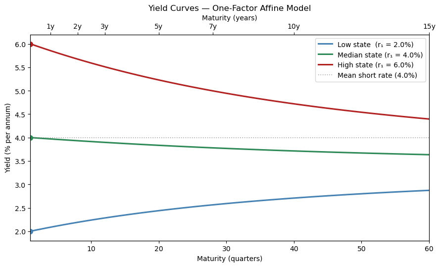
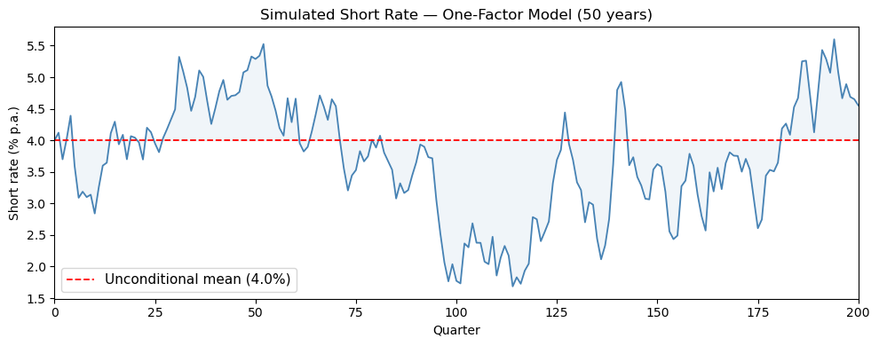
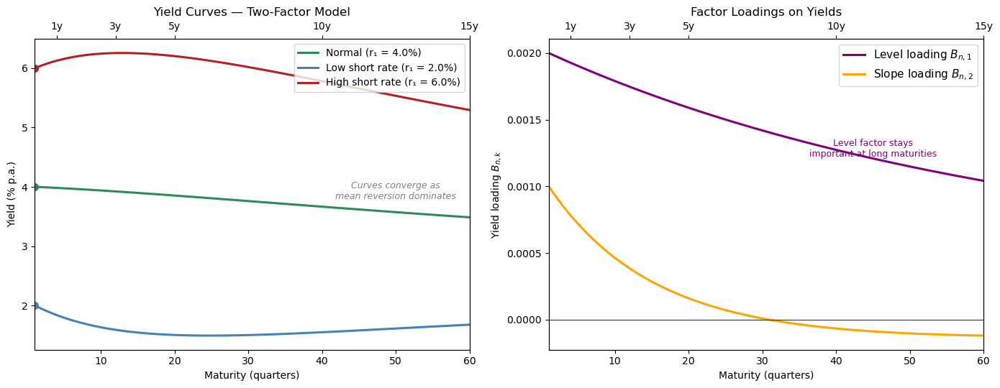
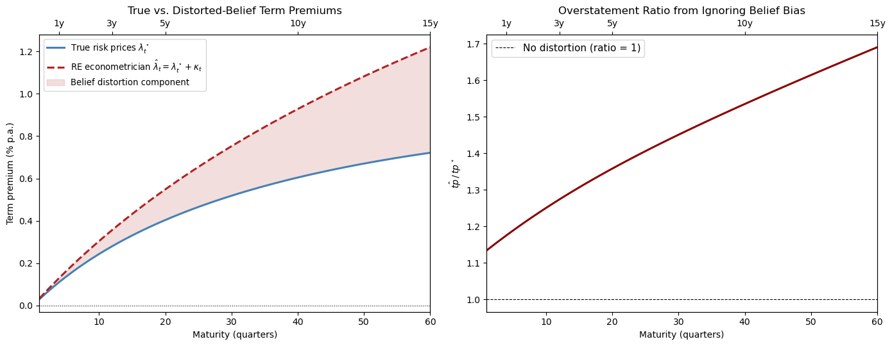

93. Affine Models of Asset Prices#
93.1. Overview#
This lecture describes a class of affine or exponential quadratic models of the stochastic discount factor that have become widely used in empirical finance.
These models are presented in chapter 15 of Ljungqvist and Sargent [2018].
The models discussed here take a different approach from the time-separable CRRA stochastic discount factor of Hansen and Singleton [1983], studied in our companion lecture.
The CRRA stochastic discount factor is
where \(r_t = \rho + \gamma\mu - \frac{1}{2}\sigma_c^2\gamma^2\).
This model asserts that exposure to the random part of aggregate consumption growth, \(\sigma_c\varepsilon_{t+1}\), is the only priced risk — the sole source of discrepancies among expected returns across assets.
Empirical difficulties with this specification (the equity premium puzzle, the risk-free rate puzzle, and the Hansen-Jagannathan bounds discussed in Doubts or Variability?) motivate the alternative approach described in this lecture.
The affine model maintains \(\mathbb{E}(m_{t+1}R_{j,t+1}) = 1\) but divorces the stochastic discount factor from consumption risk.
Instead, it
specifies an analytically tractable stochastic process for \(m_{t+1}\), and
uses overidentifying restrictions from \(\mathbb{E}(m_{t+1}R_{j,t+1}) = 1\) applied to \(N\) assets to let the data reveal risks and their prices.
Key applications we study include:
Pricing risky assets — how risk prices and exposures determine excess returns.
Affine term structure models — bond yields as affine functions of a state vector (Ang and Piazzesi [2003]).
Risk-neutral probabilities — a change-of-measure representation of the pricing equation.
Distorted beliefs — reinterpreting risk price estimates when agents hold systematically biased forecasts (Piazzesi et al. [2015]); see also Risk Aversion or Mistaken Beliefs?.
We start with some standard imports:
import numpy as np
import matplotlib.pyplot as plt
from collections import namedtuple
from numpy.linalg import eigvals
Matplotlib is building the font cache; this may take a moment.
93.2. The model#
93.2.1. State dynamics and short rate#
The model has two components.
Component 1 is a vector autoregression that describes the state of the economy and the evolution of the short rate:
Here
\(\phi\) is a stable \(m \times m\) matrix,
\(C\) is an \(m \times m\) matrix,
\(\varepsilon_{t+1} \sim \mathcal{N}(0, I)\) is an i.i.d. \(m \times 1\) random vector,
\(z_t\) is an \(m \times 1\) state vector.
Equation (93.2) says that the short rate \(r_t\) — the net yield on a one-period risk-free claim — is an affine function of the state \(z_t\).
Component 2 is a vector of risk prices \(\lambda_t\) and an associated stochastic discount factor \(m_{t+1}\):
Here \(\lambda_0\) is \(m \times 1\) and \(\lambda_z\) is \(m \times m\).
The entries of \(\lambda_t\) that multiply corresponding entries of the risks \(\varepsilon_{t+1}\) are called risk prices because they determine how exposures to each risk component affect expected returns (as we show below).
Because \(\lambda_t\) is affine in \(z_t\), the stochastic discount factor \(m_{t+1}\) is exponential quadratic in the state \(z_t\).
93.2.2. Properties of the SDF#
Since \(\lambda_t^\top\varepsilon_{t+1}\) is conditionally normal, it follows that
and
The first equation confirms that \(r_t\) is the net yield on a risk-free one-period bond.
That is why \(r_t\) is called the short rate in the exponential quadratic literature.
The second equation says that the conditional standard deviation of the SDF is approximately the magnitude of the vector of risk prices — a measure of overall market price of risk.
93.3. Pricing risky assets#
93.3.1. Lognormal returns#
Consider a risky asset \(j\) whose gross return has a lognormal conditional distribution:
where the exposure vector
Here \(\alpha_0(j)\) is \(m \times 1\) and \(\alpha_z(j)\) is \(m \times m\).
The components of \(\alpha_t(j)\) express the exposures of \(\log R_{j,t+1}\) to corresponding components of the risk vector \(\varepsilon_{t+1}\).
The specification (93.5) implies \(\mathbb{E}_t R_{j,t+1} = \exp(\nu_t(j))\), so \(\nu_t(j)\) is the expected net log return.
93.3.2. Expected excess returns#
Applying the pricing equation \(\mathbb{E}_t(m_{t+1}R_{j,t+1}) = 1\) together with the formula for the mean of a lognormal random variable gives
This is a central result.
It says:
The expected net return on asset \(j\) equals the short rate plus the inner product of the asset’s exposure vector \(\alpha_t(j)\) with the risk price vector \(\lambda_t\).
Each component of \(\lambda_t\) prices the corresponding component of \(\varepsilon_{t+1}\).
An asset that loads heavily on a risk component with a large risk price earns a correspondingly high expected return.
93.4. Affine term structure of yields#
One of the most important applications is the affine term structure model studied by Ang and Piazzesi [2003].
93.4.1. Bond prices#
Let \(p_t(n)\) be the price at time \(t\) of a risk-free pure discount bond maturing at \(t + n\) (paying one unit of consumption).
The one-period gross return on holding an \((n+1)\)-period bond from \(t\) to \(t+1\) is
The pricing equation \(\mathbb{E}_t(m_{t+1}R_{t+1}) = 1\) implies
with the initial condition
93.4.2. Exponential affine prices#
The recursion (93.8) has an exponential affine solution:
where the scalar \(\bar A_n\) and the \(m \times 1\) vector \(\bar B_n\) satisfy the Riccati difference equations
with initial conditions \(\bar A_1 = -\delta_0\) and \(\bar B_1 = -\delta_1\).
93.4.3. Yields#
The yield to maturity on an \(n\)-period bond is
Substituting (93.9) gives
where \(A_n = -\bar A_n / n\) and \(B_n = -\bar B_n / n\).
Yields are affine functions of the state vector \(z_t\).
This is the defining property of affine term structure models.
93.5. Python implementation#
We now implement the affine term structure model and compute bond prices, yields, and risk premiums numerically.
AffineModel = namedtuple('AffineModel',
('μ', 'φ', 'C', 'δ_0', 'δ_1', 'λ_0', 'λ_z', 'm', 'φ_rn', 'μ_rn'))
def create_affine_model(μ, φ, C, δ_0, δ_1, λ_0, λ_z):
"""Create an affine term structure model."""
μ = np.asarray(μ, float)
φ = np.asarray(φ, float)
C = np.asarray(C, float)
δ_1 = np.asarray(δ_1, float)
λ_0, λ_z = np.asarray(λ_0, float), np.asarray(λ_z, float)
return AffineModel(μ=μ, φ=φ, C=C, δ_0=float(δ_0), δ_1=δ_1,
λ_0=λ_0, λ_z=λ_z, m=len(μ),
φ_rn=φ - C @ λ_z, μ_rn=μ - C @ λ_0)
def bond_coefficients(model, n_max):
"""Compute (A_bar_n, B_bar_n) for n = 1, ..., n_max."""
A_bar = np.zeros(n_max + 1)
B_bar = np.zeros((n_max + 1, model.m))
A_bar[1], B_bar[1] = -model.δ_0, -model.δ_1
CC = model.C @ model.C.T
for n in range(1, n_max):
Bn = B_bar[n]
A_bar[n + 1] = (A_bar[n] + Bn @ model.μ_rn
+ 0.5 * Bn @ CC @ Bn
- model.δ_0)
B_bar[n + 1] = model.φ_rn.T @ Bn - model.δ_1
return A_bar, B_bar
def compute_yields(model, z, n_max):
"""Compute yield curve y_t(n) for n = 1, ..., n_max."""
A_bar, B_bar = bond_coefficients(model, n_max)
ns = np.arange(1, n_max + 1)
return np.array([(-A_bar[n] - B_bar[n] @ z) / n for n in ns])
def bond_prices(model, z, n_max):
"""Compute bond prices p_t(n) for n = 1, ..., n_max."""
A_bar, B_bar = bond_coefficients(model, n_max)
return np.array([np.exp(A_bar[n] + B_bar[n] @ z)
for n in range(1, n_max + 1)])
def simulate(model, z0, T, rng=None):
"""Simulate the state process for T periods."""
if rng is None:
rng = np.random.default_rng(42)
Z = np.zeros((T + 1, model.m))
Z[0] = z0
for t in range(T):
ε = rng.standard_normal(model.m)
Z[t + 1] = model.μ + model.φ @ Z[t] + model.C @ ε
return Z
def short_rate(model, z):
"""Compute r_t = δ_0 + δ_1^⊤ z_t."""
return model.δ_0 + model.δ_1 @ z
def risk_prices(model, z):
"""Compute λ_t = λ_0 + λ_z z_t."""
return model.λ_0 + model.λ_z @ z
93.5.1. A one-factor Gaussian example#
To build intuition, we start with a single-factor (\(m=1\)) Gaussian model.
# One-factor Gaussian model (quarterly)
μ = np.array([0.0])
φ = np.array([[0.95]])
C = np.array([[1.0]])
δ_0 = 0.01 # 1%/quarter ≈ 4% p.a.
δ_1 = np.array([0.001])
λ_0 = np.array([0.05])
λ_z = np.array([[-0.01]]) # countercyclical
model_1f = create_affine_model(μ, φ, C, δ_0, δ_1, λ_0, λ_z)
φ_Q = model_1f.φ_rn[0, 0]
half_life = np.log(2) / (-np.log(φ[0, 0]))
σ_z = 1.0 / np.sqrt(1 - φ[0, 0]**2)
print(f"Physical AR(1): φ = {φ[0,0]:.3f}"
f" (half-life {half_life:.1f} quarters)")
print(f"Risk-neutral AR(1): φ^Q = {φ_Q:.3f} "
f"({'stable' if abs(φ_Q) < 1 else 'UNSTABLE'})")
print(f"Unconditional std of z: σ_z = {σ_z:.2f}")
r_mean = short_rate(model_1f, np.array([0.0])) * 4 * 100
print(f"Mean short rate = {r_mean:.1f}% p.a.")
print(f"Short rate range (±2σ): [{(δ_0-δ_1[0]*2*σ_z)*4*100:.1f}%, "
f"{(δ_0+δ_1[0]*2*σ_z)*4*100:.1f}%] p.a.")
Physical AR(1): φ = 0.950 (half-life 13.5 quarters)
Risk-neutral AR(1): φ^Q = 0.960 (stable)
Unconditional std of z: σ_z = 3.20
Mean short rate = 4.0% p.a.
Short rate range (±2σ): [1.4%, 6.6%] p.a.
93.5.2. Yield curve shapes#
We compute yield curves across a range of short-rate states \(z_t\).
n_max_1f = 60
maturities_1f = np.arange(1, n_max_1f + 1)
z_low = np.array([-5.0])
z_mid = np.array([0.0])
z_high = np.array([5.0])
fig, ax = plt.subplots(figsize=(9, 5.5))
r_low = short_rate(model_1f, z_low) * 4 * 100
r_mid = short_rate(model_1f, z_mid) * 4 * 100
r_high = short_rate(model_1f, z_high) * 4 * 100
for z, label, color in [
(z_low, f"Low state (r₁ = {r_low:.1f}%)",
"steelblue"),
(z_mid, f"Median state (r₁ = {r_mid:.1f}%)",
"seagreen"),
(z_high, f"High state (r₁ = {r_high:.1f}%)",
"firebrick"),
]:
y = compute_yields(model_1f, z, n_max_1f) * 4 * 100
ax.plot(maturities_1f, y, color=color, lw=2.2, label=label)
ax.plot(1, y[0], 'o', color=color, ms=7, zorder=5)
r_bar = short_rate(model_1f, np.array([0.0])) * 4 * 100
ax.axhline(r_bar, color='grey', ls=':', lw=1.2, alpha=0.7,
label=f"Mean short rate ({r_bar:.1f}%)")
ax.set_xlabel("Maturity (quarters)")
ax.set_ylabel("Yield (% per annum)")
ax.set_title("Yield Curves — One-Factor Affine Model")
ax.legend(fontsize=10, loc='best')
ax.set_xlim(1, n_max_1f)
ax2 = ax.twiny()
ax2.set_xlim(ax.get_xlim())
year_ticks = [4, 8, 12, 20, 28, 40, 60]
ax2.set_xticks(year_ticks)
ax2.set_xticklabels([f"{t/4:.0f}y" for t in year_ticks])
ax2.set_xlabel("Maturity (years)")
plt.tight_layout()
plt.show()

The model generates upward-sloping, flat, and inverted yield curves as the short rate moves across states — a key qualitative feature of observed bond markets.
93.5.3. Short rate dynamics#
T = 200
Z = simulate(model_1f, np.array([0.0]), T)
short_rates = np.array([short_rate(model_1f, Z[t]) * 4 * 100
for t in range(T + 1)])
r_bar_pct = short_rate(model_1f, np.array([0.0])) * 4 * 100
fig, ax = plt.subplots(figsize=(10, 4))
quarters = np.arange(T + 1)
ax.plot(quarters, short_rates, color="steelblue", lw=1.3)
ax.axhline(r_bar_pct, color="red", ls="--", lw=1.3,
label=f"Unconditional mean ({r_bar_pct:.1f}%)")
ax.fill_between(quarters, short_rates, r_bar_pct,
alpha=0.08, color="steelblue")
ax.set_xlabel("Quarter")
ax.set_ylabel("Short rate (% p.a.)")
ax.set_title("Simulated Short Rate — One-Factor Model (50 years)")
ax.set_xlim(0, T)
ax.legend(fontsize=11)
plt.tight_layout()
plt.show()

93.5.4. A two-factor model#
To match richer yield-curve dynamics, practitioners routinely use \(m \geq 2\) factors.
We now introduce a two-factor specification in which the factors can be interpreted as a level component and a slope component.
# Two-factor model: z = [level, slope]
μ_2 = np.array([0.0, 0.0])
φ_2 = np.array([[0.97, -0.03],
[0.00, 0.90]])
C_2 = np.eye(2)
δ_0_2 = 0.01
δ_1_2 = np.array([0.002, 0.001])
λ_0_2 = np.array([0.01, 0.005])
λ_z_2 = np.array([[-0.005, 0.0],
[ 0.0, -0.003]])
model_2f = create_affine_model(μ_2, φ_2, C_2, δ_0_2, δ_1_2, λ_0_2, λ_z_2)
print("Physical measure VAR:")
print(f" φ =\n{φ_2}")
print(f" eigenvalues of φ: {eigvals(φ_2).real.round(4)}")
print()
print("Risk-neutral measure VAR:")
print(f" φ^Q = φ - Cλ_z =\n{model_2f.φ_rn.round(4)}")
eigs_Q = eigvals(model_2f.φ_rn).real
stable = all(abs(e) < 1 for e in eigs_Q)
status = "stable" if stable else "UNSTABLE"
print(f" eigenvalues of φ^Q: {eigs_Q.round(4)}"
f" ({status})")
print()
print("Risk prices make Q dynamics more persistent than P dynamics.")
Physical measure VAR:
φ =
[[ 0.97 -0.03]
[ 0. 0.9 ]]
eigenvalues of φ: [0.97 0.9 ]
Risk-neutral measure VAR:
φ^Q = φ - Cλ_z =
[[ 0.975 -0.03 ]
[ 0. 0.903]]
eigenvalues of φ^Q: [0.975 0.903] (stable)
Risk prices make Q dynamics more persistent than P dynamics.
n_max_2f = 60
maturities_2f = np.arange(1, n_max_2f + 1)
states = {
"Normal": np.array([0.0, 0.0]),
"Low short rate": np.array([-4.0, 3.0]),
"High short rate": np.array([4.0, -3.0]),
}
fig, (ax1, ax2) = plt.subplots(1, 2, figsize=(14, 5.5))
colors_2f = ["seagreen", "steelblue", "firebrick"]
for (label, z), color in zip(states.items(), colors_2f):
r_now = short_rate(model_2f, z) * 4 * 100
y = compute_yields(model_2f, z, n_max_2f) * 4 * 100
ax1.plot(maturities_2f, y, lw=2.2, color=color,
label=f"{label} (r₁ = {r_now:.1f}%)")
ax1.plot(1, y[0], 'o', color=color, ms=7, zorder=5)
ax1.annotate("Curves converge as\nmean reversion dominates",
xy=(50, 3.8), fontsize=9, color="gray", ha='center',
style='italic')
ax1.set_xlabel("Maturity (quarters)")
ax1.set_ylabel("Yield (% p.a.)")
ax1.set_title("Yield Curves — Two-Factor Model")
ax1.legend(fontsize=10)
ax1.set_xlim(1, n_max_2f)
A_bar, B_bar = bond_coefficients(model_2f, n_max_2f)
ns = np.arange(1, n_max_2f + 1)
B_n = np.array([-B_bar[n] / n for n in ns])
ax2.plot(ns, B_n[:, 0], lw=2.2, color="purple",
label=r"Level loading $B_{n,1}$")
ax2.plot(ns, B_n[:, 1], lw=2.2, color="orange",
label=r"Slope loading $B_{n,2}$")
ax2.axhline(0, color='black', lw=0.6)
ax2.set_xlabel("Maturity (quarters)")
ax2.set_ylabel(r"Yield loading $B_{n,k}$")
ax2.set_title("Factor Loadings on Yields")
ax2.legend(fontsize=11)
ax2.set_xlim(1, n_max_2f)
ax2.annotate("Level factor stays\nimportant at long maturities",
xy=(45, B_n[44, 0]), fontsize=9, color="purple",
ha='center', va='bottom')
for ax in (ax1, ax2):
ax_top = ax.twiny()
ax_top.set_xlim(ax.get_xlim())
year_ticks = [4, 12, 20, 40, 60]
ax_top.set_xticks(year_ticks)
ax_top.set_xticklabels([f"{t/4:.0f}y" for t in year_ticks])
plt.tight_layout()
plt.show()

93.7. Risk-neutral probabilities#
The stochastic discount factor (93.4) defines a change of measure from the physical measure \(P\) to the risk-neutral measure \(Q\).
Define the likelihood ratio
Then
and the pricing equation \(\mathbb{E}^P_t(m_{t+1}R_{j,t+1}) = 1\) becomes
Under the risk-neutral measure, expected returns on all assets equal the risk-free return.
93.7.1. The risk-neutral VAR#
Multiplying the physical conditional distribution of \(z_{t+1}\) by the likelihood ratio (93.13) gives the risk-neutral conditional distribution
In other words, under \(Q\) the state vector follows
where \(\varepsilon^Q_{t+1} \sim \mathcal{N}(0, I)\) under \(Q\).
The risk-neutral drift adjustments \(-C\lambda_0\) (constant) and \(-C\lambda_z\) (state-dependent) encode exactly how the asset pricing formula \(\mathbb{E}^P_t m_{t+1}R_{j,t+1}=1\) adjusts expected returns for exposure to the risks \(\varepsilon_{t+1}\).
93.7.2. Verification via risk-neutral pricing#
Bond prices can be computed by discounting at \(r_t\) under \(Q\):
We can verify that this agrees with (93.9) by iterating the affine recursion under the risk-neutral VAR.
Below we confirm this numerically.
def bond_price_mc_Q(model, z0, n, n_sims=50_000, rng=None):
"""Estimate p_t(n) by Monte Carlo under Q."""
if rng is None:
rng = np.random.default_rng(2024)
m = len(z0)
Z = np.tile(z0, (n_sims, 1))
disc = np.zeros(n_sims)
for _ in range(n):
disc += model.δ_0 + Z @ model.δ_1
ε = rng.standard_normal((n_sims, m))
Z = model.μ_rn + Z @ model.φ_rn.T + ε @ model.C.T
return np.mean(np.exp(-disc))
z_test = np.array([0.01, 0.005])
p_analytic = bond_prices(model_2f, z_test, 40)
rng = np.random.default_rng(2024)
maturities_check = [4, 12, 24, 40]
mc_prices = [bond_price_mc_Q(model_2f, z_test, n, n_sims=80_000, rng=rng)
for n in maturities_check]
header = (f"{'Maturity':>10} {'Analytic':>12}"
f" {'Monte Carlo':>12} {'Error (bps)':>12}")
print(header)
print("-" * 52)
for n, mc in zip(maturities_check, mc_prices):
analytic = p_analytic[n - 1]
error_bp = abs(analytic - mc) / analytic * 10_000
print(f"{n:>10} {analytic:>12.6f} {mc:>12.6f} {error_bp:>12.2f}")
Maturity Analytic Monte Carlo Error (bps)
----------------------------------------------------
4 0.960871 0.960861 0.10
12 0.888777 0.888591 2.09
24 0.795043 0.794449 7.47
40 0.692775 0.693730 13.78
The analytical and Monte Carlo bond prices agree closely, validating the Riccati recursion (93.10)–(93.11).
93.8. Distorted beliefs#
Piazzesi et al. [2015] assemble survey evidence suggesting that economic experts’ forecasts are systematically biased relative to the physical measure.
93.8.1. The subjective measure#
Let \(\hat z_{t+1}\) be one-period-ahead expert forecasts.
Regressing these on \(z_t\):
yields estimates \(\hat\mu, \hat\phi\) that differ from the physical parameters \(\mu, \phi\).
To formalise the distortion, let \(\kappa_t = \kappa_0 + \kappa_z z_t\) and define the likelihood ratio
Multiplying the physical conditional distribution of \(z_{t+1}\) by this likelihood ratio gives the subjective (S) conditional distribution
Comparing with the regression implies
Piazzesi et al. find that experts behave as if the level and slope of the yield curve are more persistent than under the physical measure: \(\hat\phi\) has larger eigenvalues than \(\phi\).
93.8.2. Pricing under distorted beliefs#
A representative agent with subjective beliefs \(S\) and risk prices \(\lambda^\star_t\) satisfies
Expanding this in terms of the physical measure \(P\), one finds that the rational-expectations econometrician who imposes \(P\) will estimate risk prices
That is, the econometrician’s estimate conflates true risk prices \(\lambda^\star_t\) and belief distortions \(\kappa_t\).
Part of what looks like a high price of risk is actually a systematic forecast bias.
93.8.3. Numerical illustration#
φ_P = φ_2.copy()
μ_P = μ_2.copy()
# Subjective parameters: experts believe factors are MORE persistent
φ_S = np.array([[0.985, -0.025], [0.00, 0.94]])
μ_S = np.array([-0.005, 0.0])
κ_z = np.linalg.solve(C_2, φ_P - φ_S)
κ_0 = np.linalg.solve(C_2, μ_P - μ_S)
print("Distortion parameters"
" (κ quantifies how experts' beliefs"
" differ from P):")
print(f" κ_0 = {κ_0.round(4)}")
print(f" κ_z =\n{κ_z.round(4)}")
print()
print("Eigenvalue comparison:")
eig_P = sorted(eigvals(φ_P).real, reverse=True)
eig_S = sorted(eigvals(φ_S).real, reverse=True)
print(f" Physical φ eigenvalues: {[round(e, 4) for e in eig_P]}")
print(f" Subjective φ̂ eigenvalues: {[round(e, 4) for e in eig_S]}")
print(" Experts believe both factors are more persistent.")
print()
λ_star_0 = np.array([0.03, 0.015])
λ_star_z = np.array([[-0.006, 0.0], [0.0, -0.004]])
λ_hat_0 = λ_star_0 + κ_0
λ_hat_z = λ_star_z + κ_z
print("True risk prices: λ*_0 =", λ_star_0.round(4))
print("Econometrician estimates: λ̂_0 =", λ_hat_0.round(4))
print(f" Belief distortion inflates λ̂_0 by κ_0 = {κ_0.round(4)}.")
Distortion parameters (κ quantifies how experts' beliefs differ from P):
κ_0 = [0.005 0. ]
κ_z =
[[-0.015 -0.005]
[ 0. -0.04 ]]
Eigenvalue comparison:
Physical φ eigenvalues: [np.float64(0.97), np.float64(0.9)]
Subjective φ̂ eigenvalues: [np.float64(0.985), np.float64(0.94)]
Experts believe both factors are more persistent.
True risk prices: λ*_0 = [0.03 0.015]
Econometrician estimates: λ̂_0 = [0.035 0.015]
Belief distortion inflates λ̂_0 by κ_0 = [0.005 0. ].
model_true = create_affine_model(
μ_2, φ_2, C_2, δ_0_2, δ_1_2, λ_star_0, λ_star_z)
model_econ = create_affine_model(
μ_2, φ_2, C_2, δ_0_2, δ_1_2, λ_hat_0, λ_hat_z)
for name, mdl in [("True", model_true), ("Econometrician", model_econ)]:
eigs = eigvals(mdl.φ_rn).real
status = "stable" if all(abs(e) < 1 for e in eigs) else "UNSTABLE"
print(f"{name} model: φ^Q eigenvalues = {eigs.round(4)} ({status})")
z_ref = np.array([0.0, 0.0])
n_max_db = 60
maturities_db = np.arange(1, n_max_db + 1)
tp_true = term_premiums(model_true, z_ref, n_max_db) * 4 * 100
tp_econ = term_premiums(model_econ, z_ref, n_max_db) * 4 * 100
fig, (ax1, ax2) = plt.subplots(1, 2, figsize=(14, 5.5))
ax1.plot(maturities_db, tp_true, lw=2.2, color="steelblue",
label=r"True risk prices $\lambda^\star_t$")
ax1.plot(maturities_db, tp_econ, lw=2.2, color="firebrick", ls="--",
label=(r"RE econometrician"
r" $\hat\lambda_t = \lambda^\star_t + \kappa_t$"))
ax1.fill_between(maturities_db, tp_true, tp_econ,
alpha=0.15, color="firebrick",
label="Belief distortion component")
ax1.axhline(0, color="black", lw=0.8, ls=":")
ax1.set_xlabel("Maturity (quarters)")
ax1.set_ylabel("Term premium (% p.a.)")
ax1.set_title("True vs. Distorted-Belief Term Premiums")
ax1.legend(fontsize=9.5)
ax1.set_xlim(1, n_max_db)
mask = np.abs(tp_true) > 1e-8
ratio = np.full_like(tp_true, np.nan)
ratio[mask] = tp_econ[mask] / tp_true[mask]
ax2.plot(maturities_db[mask], ratio[mask], lw=2.2, color="darkred")
ax2.axhline(1, color="black", lw=0.8, ls="--",
label="No distortion (ratio = 1)")
ax2.set_xlabel("Maturity (quarters)")
ax2.set_ylabel(r"$\hat{tp}\, /\, tp^\star$")
ax2.set_title("Overstatement Ratio from Ignoring Belief Bias")
ax2.legend(fontsize=11)
ax2.set_xlim(1, n_max_db)
for ax in (ax1, ax2):
ax_top = ax.twiny()
ax_top.set_xlim(ax.get_xlim())
year_ticks = [4, 12, 20, 40, 60]
ax_top.set_xticks(year_ticks)
ax_top.set_xticklabels([f"{t/4:.0f}y" for t in year_ticks])
plt.tight_layout()
plt.show()
True model: φ^Q eigenvalues = [0.976 0.904] (stable)
Econometrician model: φ^Q eigenvalues = [0.991 0.944] (stable)

When expert beliefs are overly persistent (\(\hat\phi\) has larger eigenvalues than \(\phi\)), the rational-expectations econometrician attributes too much of the observed risk premium to risk aversion.
Disentangling belief distortions from genuine risk prices requires additional data — for example, the survey forecasts used by Piazzesi, Salomao, and Schneider.
Our Risk Aversion or Mistaken Beliefs? lecture explores this confounding in greater depth.
93.9. The bond price recursion#
We verify the exponential affine form (93.9) by induction.
Claim: If \(p_{t+1}(n) = \exp(\bar A_n + \bar B_n^\top z_{t+1})\), then \(p_t(n+1) = \exp(\bar A_{n+1} + \bar B_{n+1}^\top z_t)\) with \(\bar A_{n+1}\) and \(\bar B_{n+1}\) given by (93.10)–(93.11).
Proof sketch. Using the SDF (93.4) and the VAR (93.1):
Taking the conditional expectation (and using \(\varepsilon_{t+1}\sim\mathcal{N}(0,I)\)):
Substituting \(r_t = \delta_0 + \delta_1^\top z_t\) and \(\lambda_t = \lambda_0 + \lambda_z z_t\), collecting constant and linear-in-\(z_t\) terms, and equating coefficients gives exactly (93.10)–(93.11). \(\blacksquare\)
93.10. Concluding remarks#
The affine model of the stochastic discount factor provides a flexible and tractable framework for studying asset prices.
Key features are:
Analytical tractability — Bond prices are exponential affine in \(z_t\); expected returns decompose cleanly into a short rate plus a risk-price×exposure inner product.
Empirical flexibility — The free parameters \((\mu, \phi, C, \delta_0, \delta_1, \lambda_0, \lambda_z)\) can be estimated by maximum likelihood (the Kalman filter chapter describes the relevant methods) without imposing restrictions from a full general equilibrium model.
Multiple risks — The vector structure accommodates many sources of risk (monetary policy, real activity, volatility, etc.).
Belief distortions — The framework naturally accommodates non-rational beliefs via likelihood-ratio twists of the physical measure, as in Piazzesi et al. [2015].
The model also connects directly to the Hansen–Jagannathan bounds studied in Doubts or Variability? and to robust control interpretations of the stochastic discount factor described in other chapters of Ljungqvist and Sargent [2018].
For finite-state approaches to asset pricing that complement the continuous-state framework here, see Asset Pricing: Finite State Models.